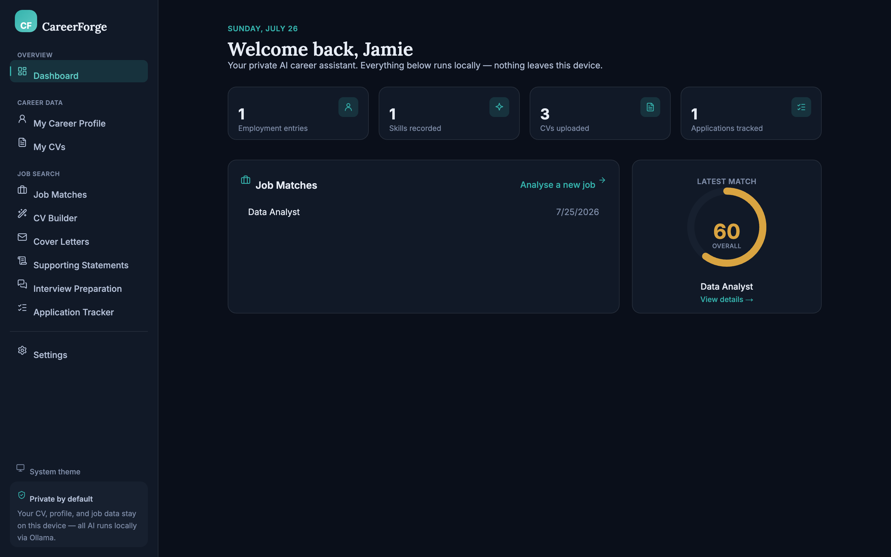
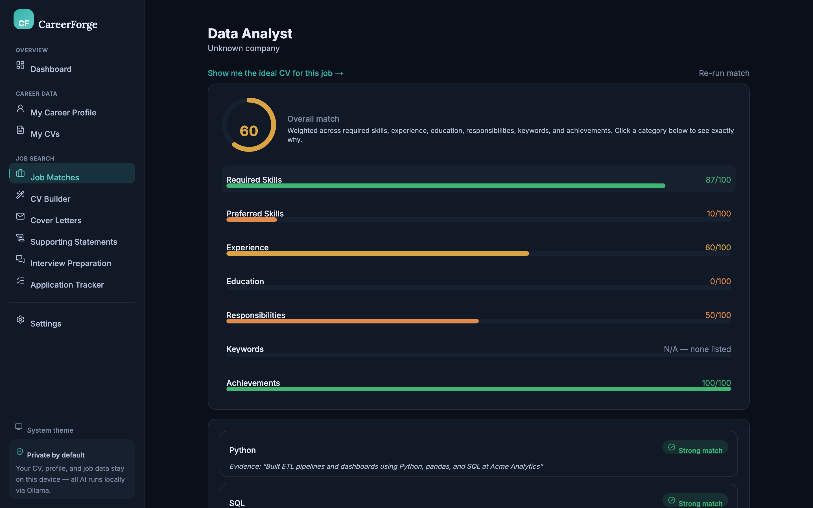
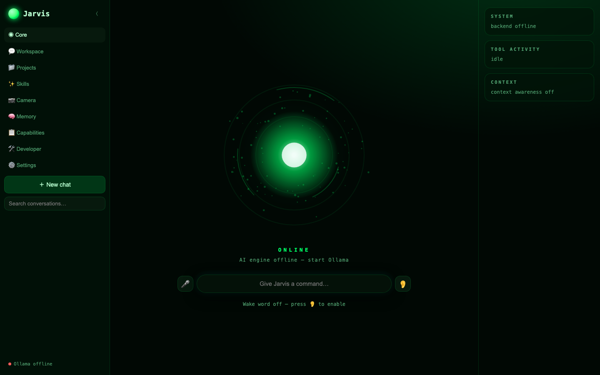
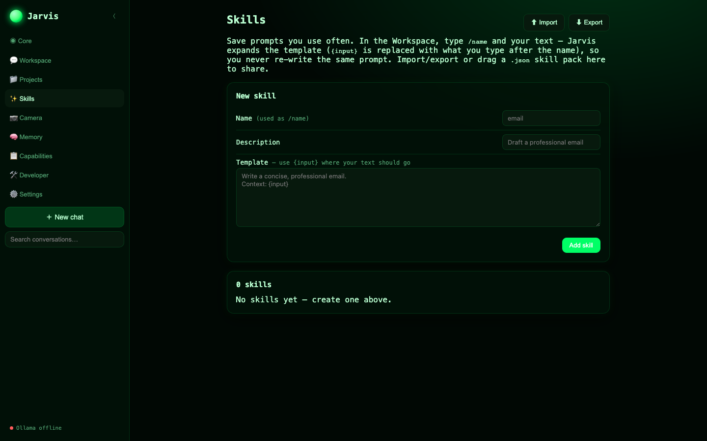
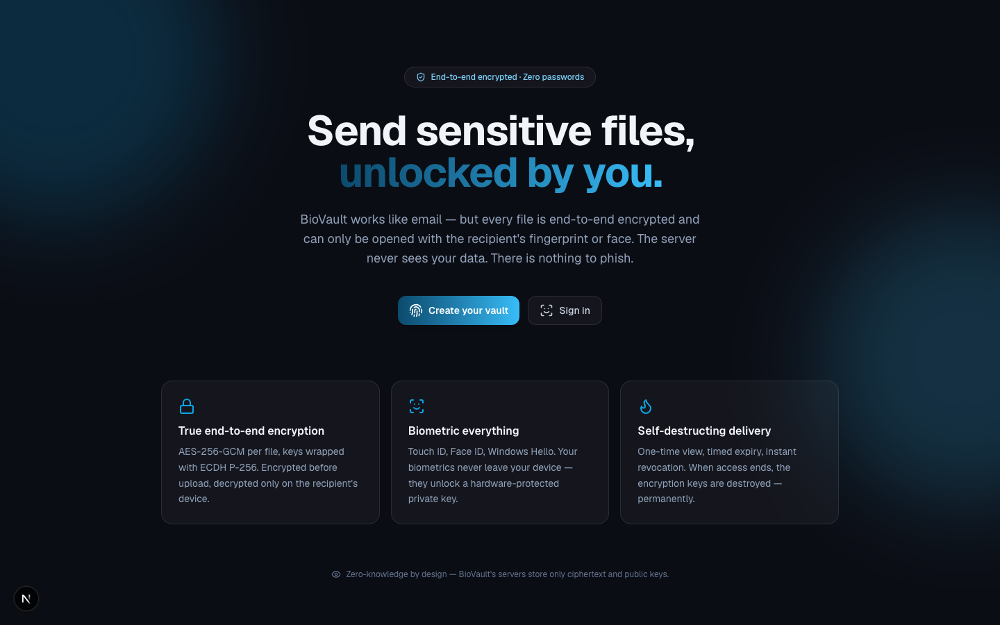
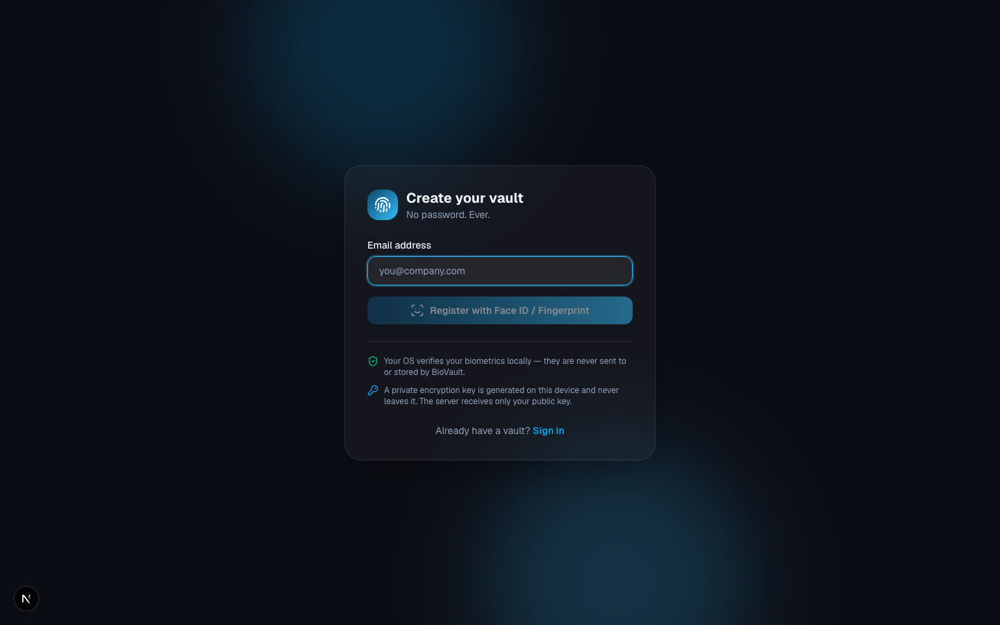

I'm Salah. I design AI and digital transformation solutions by day, and build privacy-first apps that run entirely on-device by night. If it touches your data, it should run on your machine.
By day, I'm an AI & Digital Officer at a UK local authority, where I design and ship AI-powered tools and automation workflows that support the council's digital transformation, from internal applications to AI training for non-technical colleagues.
By night, I build software for myself and anyone who cares that their data stays their own: CV tools, voice assistants, and encrypted file sharing that run on local models via Ollama instead of a cloud API. I hold an MSc in Artificial Intelligence and a background in Computer Security & Forensics, and I like projects that sit right at that intersection: capable AI that's also worth trusting.
A selection of my local-first AI projects, all open on GitHub.






Multi-tenant asset management system with role-based access control, dynamic asset attributes, and relationship visualization via Mermaid diagrams.
Full-stack meeting operations platform: invites with RSVP, department-aware auto-grouping, Slido-style live presenter Q&A, PowerPoint import/export, and real-time dashboards over SSE.
Turns documents into Easy Read versions for people with learning disabilities: short sentences, simple words, and a picture next to every section, running fully on local AI via Ollama.
Real-time face recognition module built on OpenCV: loads known-face encodings and identifies people live from a video stream or images.
Starter / Mover / Leaver workflow automation with an HR-feed to Entra sync simulator, plus an Admin Centre for configuring required fields per data store.
Conversational AI agent that answers employee HR questions (policies, leave, benefits) directly, cutting routine query volume reaching the HR team.
AI agent that answers IT support questions and raises tickets automatically on the user's behalf, reducing manual service desk workload.
Agent that analyses organisational financial data on request and generates visual reports, turning ad-hoc finance questions into charts without manual spreadsheet work.
A suite of Power BI-driven automations that replace manual, repetitive reporting and data-entry work across the organisation with self-updating dashboards and flows.
Computer Science: projects included a predictive maintenance model (Python + AWS SageMaker), an NLP sentiment-analysis system (TensorFlow + NLTK), and an AI-powered e-commerce chatbot (Dialogflow).
Coursework included network vulnerability assessment (Nessus, Wireshark), digital forensics investigation (EnCase, FTK Imager), and IoT security research for smart homes.